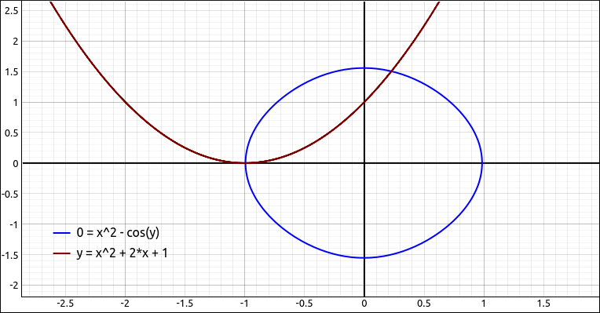
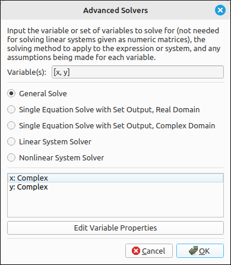
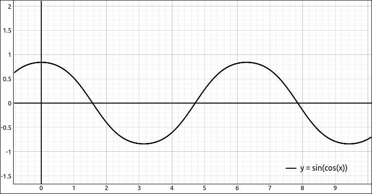
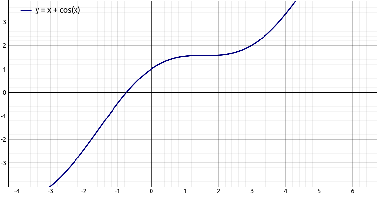
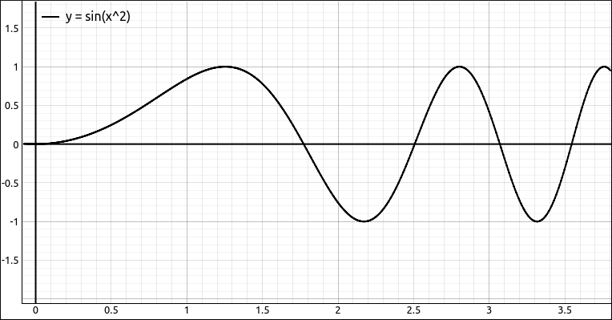
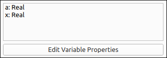
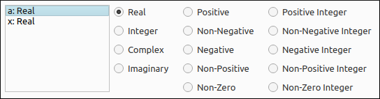

Solving Equations#
In this software package all expressions are solved for 0. So invoking any of the solving options on an expression on the CAS solves that expression for 0. The underlying SymPy CAS that we are using can create and solve equations but this just introduces more unnecessary syntax for the user. So if you need to solve an equation just put all the terms on one side and select the solver you wish to use. This program offers several different solvers including some advanced ones.
Solve#
This is the most general solver that will produce an acceptable answer the majority of the time. When you select this option a dialog box will appear asking for the variable or variables you wish to solve for. Input the desired variable or list of variables and click OK. The output is usually a list of solutions if the program can solve the equation. If the program cannot find an algebraic solution to the equation it will produce an error. We will do several examples of this tool.
Say we have the following in the CAS,
-x^2 + (x^2 + 3*x + 2)^2 + 1, that is, \(- x^{2} + \left(x^{2} + 3 x + 2\right)^{2} + 1\). If we selectAlgebra > Solveand put inxas the variable we get
That is, the four solutions,
Say we have
x^2 + cos(y)in the CAS and we solve it for justxwe get, \(\left[ - \sqrt{- \cos{\left(y \right)}}, \ \sqrt{- \cos{\left(y \right)}}\right]\).Say we have
x^2 * cos(y)in the CAS and we solve it for[x, y](that is bothxandytogether) we get, \(\left[ \left( 0, \ y\right), \ \left( x, \ \frac{\pi}{2}\right), \ \left( x, \ \frac{3 \pi}{2}\right)\right]\). The first ordered pair tells us that if \(x = 0\) then \(y\) can be any value. The second ordered pair tells us that if \(y = \pi/2\) then \(x\) can be any value and the third ordered pair tells us that if \(y = 3\pi/2\) then \(x\) can be any value. This is obviously not all of the solutions since the \(\cos(y)\) has an infinite number of distinct values where it is 0, each of these would produce an ordered pair.
From the above example, it is clear that the Solve option will not always produce a complete set of solutions. Below we will look at some advanced solvers, the result of solving a nonlinear system on the above equation gives us the following output.
This gives us a complete set of solutions although they are easy to work with. You can also solve systems of equations, simply put them in a list and select Algebra > Solve as before. This will find solutions where all the expressions in the list are 0 at the same time.
Say we have the following in the CAS,
[x^2 - cos(y),x^2 + 2*x + 1], that is, \(\left[ x^{2} - \cos{\left(y \right)}, \ x^{2} + 2 x + 1\right]\), if solve this for bothxandywe get, \(\left[ \left( -1, \ 0\right), \ \left( -1, \ 2 \pi\right)\right]\). Again, not a complete set of solutions but enough to work with in most cases.

Non-Linear System Solving Example#
Again, if we use the advanced solver for nonlinear systems we get the solution set,
Note
Do not try to solve matrices (systems of equations) with this option. For these you will want either an advanced solver or the system solver in the Matrix menu.
Advanced Solvers#
The advanced solvers will, in general, produce a more complete solution set, usually in set form as with the examples we did above. When you select Algebra >> Advanced Solvers a dialog box will appear that will allow you to select the variable or variables you wish to solve for, the solving method, and any assumptions you wish to place on the variables in the expression. If the program can detect the type of equation, or system, that is to be solved it will gray out any solver that is not valid for that equation or system.

Advanced Solvers Dialog Box#
General Solve#
This is just the same solver that is used in the Solve option. The difference here is that you can set the domains of the variables.
For example, say we have sin(cos(x)) in the CAS. If we select Algebra > Solve and solve this for x we get,
Looking at the graph, or simply realizing that this is clearly a periodic function, it is clear that we did not get all the solutions.

\(y = \sin(\cos(x))\)#
A closer look should reveal another thing, the third and fourth solutions both contain \(\operatorname{acos}(\pi)\), but since \(\cos(x)\) has range \([-1,1]\) these solutions cannot be real. Approximating the solutions gives us,
which verifies that these solutions are not real numbers. Of course we can simply ignore the unreal solutions if we know we want real solutions but we could also use the General Solve in the advanced solvers and change x to be real in the variable assumptions area at the bottom of the dialog. If we do that our result is,
Again not a complete set of solutions but the unreal solutions were removed.
Single Equation Solve with Set Output, Real Domain#
This solver will solve a single equation for a single variable and assume that all variables are real, overriding the variable assumptions at the bottom.
For example, say we want to solve \(\sin(2x)\) for x. Select the Single Equation Solve with Set Output, Real Domain solver and click OK. The result is,
Which is the entire set of solutions.
Another example, this shows that the advanced solvers may not always produce better answers. Say we apply this solver to \(\sin(\cos(x))\). The result is,
Which is not very enlightening.
Single Equation Solve with Set Output, Complex Domain#
This solver will solve a single equation for a single variable and assume that all variables are complex, overriding the variable assumptions at the bottom.
For example, if we wanted to solve x^4 + 6*x^3 + 12*x^2 + 12*x + 5, that is, \(x^{4} + 6 x^{3} + 12 x^{2} + 12 x + 5\). The solutions using the real domain would just be,
but using the complex domain gives us all four solutions,
Linear System Solver#
This solver is for the solving of linear systems of equations. The system can be input either as a list or an augmented matrix. The output will be in general solution vector form or sometimes as a set.
For example, if we input the following matrix,
and apply this solver to the matrix we get the following result,
We can also input the system as a list of linear equations as long as they are manipulated to be equations to 0. For example, the system,
could be input as, [-4*x + 5*y - 5*z - 10, -10*x + 10*y - 9*z - 9, -6*x + 7*y - z + 1]
Applying this solver gives us the solution,
This solver can handle systems with an infinite number of solutions as well, say we have the following matrix in the CAS,
This solver returns the solution,
Nonlinear System Solver#
This solver is for the solving of nonlinear systems of equations. In this case the system should be input as a list of equations.
For example, say we input [x^2 - cos(y),x^2 + 2*x + 1], that is, \(\left[ x^{2} - \cos{\left(y \right)}, \ x^{2} + 2 x + 1\right]\). The nonlinear solver will produce,
Numeric Solution Close to x = a#
In many cases finding exact solutions to equations is very difficult, and possibly impossible. In these cases we can still obtain numeric solutions and hence put some meaning to the solution of the expression we are working with. One tool is to find a solution close to an initial guess to the solution. This tool is for solving single expressions in a single variable.
For example, say we wanted to find the roots of the expression \(x + \cos{\left(x \right)}\). If we try to solve this algebraically with the tools mentioned above we either get an error or a result that does not mean anything. If we graph the function we get the following,

\(y = x + \cos(x)\)#
There appears to be a solution close to \(-1\). If we select Algebra > Numeric Solution Close to x = a, let the variable be x and input an initial guess of -1 and the result is -0.739085133215161.
It is possible that this method will not return a solution or that the solution it does return id not the closest one to the initial guess. For example, put in the \(\sin(x)\) and try this with an initial guess of \(\pi/2\) and we get 9.42477796076938, that is, \(3\pi\), not 0 or \(\pi\), the closest solutions.
Numeric Solutions in [a, b]#
This option allows the user to approximate all the solutions in a given interval. Like the previous tool, this option is for solving a single expression in a single variable.
For example, say we want the roots to \(\sin(x^2)\). The solve tool gives us the result \(\left[ 0, \ - \sqrt{\pi}, \ \sqrt{\pi}\right]\), which is a good start, these are the three solutions closest to the origin.

\(y = \sin(x^2)\)#
There are, of course, an infinite number of solutions to this expression. The next three positive solutions appear to be between 2.25 and 3.75. If we select this option a dialog box will appear asking for lower and upper bounds for the interval (we will use 2.25 and 3.75), the number of test points (we will keep this at 100), and the tolerance exponent (we will keep that at 8). When we click OK we get,
These are the approximations to the three solutions we wanted. What the program did was it divided the given interval \([2.25, 3.75]\) into 100 evenly spaced test points, it then applied the above method of finding a solution close to each of these test points (obtaining 100 solutions). It then removed duplicate solutions that were within the tolerance leaving the three solutions above.
Note that it is possible that this method will return solutions that are close to each other but are further away than the tolerance amount. This is common when the curve osculates the x-axis.
Polynomial Roots#
This tool is for finding exact roots to a polynomial expression. If you try to apply this to an expression that is not a polynomial you will get an error. Note that the polynomial does not need to be in simplified or expanded form.
For example, if we applied this tool to either
or
which is just the expanded form of the first expression, we get
Polynomial Root Approximations#
This tool is for finding approximations to the roots to a polynomial expression. If you try to apply this to an expression that is not a polynomial you will get an error. Note that the polynomial does not need to be in simplified or expanded form.
For example, if we applied this tool to either
or
which is just the expanded form of the first expression, we get
You may have studied at one point that you can find the exact solutions to a quadratic equation (degree 2) using the quadratic formula. You may have also studied that there are similar, but more difficult, equations to get the exact solutions to degree 3 and degree 4 equations. Specifically, the solutions to \(a x^{3} + b x^{2} + c x + d = 0\) are,
We will forgo the solutions to the degree 4 equations. If you studied polynomial solutions a little further you know that for degree 5 and above there are no general solution equations. Not just that they have not been discovered yet they do not exist. So for higher degree polynomials we might get lucky and get exact solutions or we may not.
For example, input the polynomial x^5 - 7*x^4 + x^3 - 5*x^2 - x + 3, that is, \(x^{5} - 7 x^{4} + x^{3} - 5 x^{2} - x + 3\). If we apply the Polynomial Roots tool we get [] in other words it could not solve the equation exactly. If we apply the Polynomial Root Approximations tool we get the solutions,
The advantage to using this as opposed to finding solutions close to a value or in an interval is that with this tool you can get approximations to the unreal roots.
Variable Assumptions#
Assumptions#
Assumptions about variables are essentially what type of number does the variable represent. In most cases in an introductory Calculus sequence you simply assume that all variables represent real numbers, and sometimes complex numbers. The default setting for variables is as a real number except for solving equations where we use complex numbers.
As a classic example, say we input sqrt(x^2) into the CAS, the entry would be displayed as,
If we select Algebra > Simplify, a simplification that makes no assumptions about the variables, the result is still,
But if we use Algebra > Special Simplifications, leave the settings as is, and click OK the result is,
The difference is that the default domain for x in the Special Simplifications dialog was a real number. In the real number system, \(\sqrt{x^{2}} = \left|{x}\right|\) but in the complex number system it is not. For example, \(\sqrt{i^{2}} = -1 \neq \left|{i}\right| = 1\).
Another classic example is in the study of l’Hospital’s Rule. Marquis de l’Hospital published the very first Calculus textbook in 1696, where l’Hospital’s Rule is first seen in print. l’Hospital did not discover this rule, the Swiss mathematician John Bernoulli (1667–1748) is the one who discovered the method. l’Hospital and Bernoulli had an interesting business relationship where l’Hospital purchased the rights to this method, which is why it is named after him and not Bernoulli. In his book l’Hospital wanted to calculate,
which is a \(\frac{0}{0}\) indeterminate form and hence can be attacked using l’Hospital’s Rule. This expression also assumed that \(a > 0\).
If we put this expression into our CAS (-a*(a^2*x)^(1/3) + sqrt(2*a^3*x - x^4))/(a - (a*x^3)^(1/4)), then select Calculus > Limit, when the limit dialog comes up input x for the variable and a for the limit point, and click OK. The result will be,
It should be fairly obvious that this does not work for a being a positive real number since the denominator is clearly 0 in this case. This time when we select Calculus > Limit we will change the data type of a to be a positive real, and leave x alone. This time the result is the correct answer for these assumptions of,
In the vast majority of cases you will not need to do anything with variable assumptions. The reason we incorporated the ability to specify assumptions about the variable data type is that in a few instances (like in the above examples) you may need to tell the program that variable belongs to a more restrictive domain.
Assumptions User Interface#
The variable assumptions user interface will look like one of the two following layouts.

Variable Properties User Interface#
or

Variable Properties Editor User Interface#
If it is the first of these then clicking the Edit Variable Properties button will open a dialog box with the second interface. The second is where the changes are made. In either of these each variable in the expression is listed with the data type we are assuming it belongs. In the second interface you can edit the domain by first selecting the variable from the list and then selecting its type by clicking on it.
The reason we included the first interface was that it was less intimidating and easier to accept as is,which is what the user will do in most cases. As noted above these assumptions do not need to be changed very often.